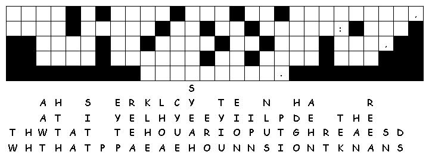

This week's lessons: (Genesis 21:8-21 and Psalm 86:1-10, 16-17 ) or (Jeremiah 20:7-13 and Psalm 69:7-10, (11-15), 16-18), Romans 6:1b-11 , Matthew 10:24-39
Middle-School Pew-work
What are you afraid of?___________________________________________________________ ______________________________________________________________________________
What helps you to not be afraid?____________________________________________________ ______________________________________________________________________________ ______________________________________________________________________________
What does it mean to “take up your cross and follow?”___________________________________ ______________________________________________________________________________
In what ways do you (or could you) “take up your cross” to follow Jesus?____________________________ ______________________________________________________________________________ ______________________________________________________________________________ ______________________________________________________________________________ ______________________________________________________________________________ ______________________________________________________________________________

Created by Puzzlemaker at DiscoverySchool.com
Next week: Genesis 22:1-14 and Psalm 13) or (Jeremiah 28:5-9 and Psalm 89:1-4, 15-18), Romans 6:12-23 , Matthew 10:40-42